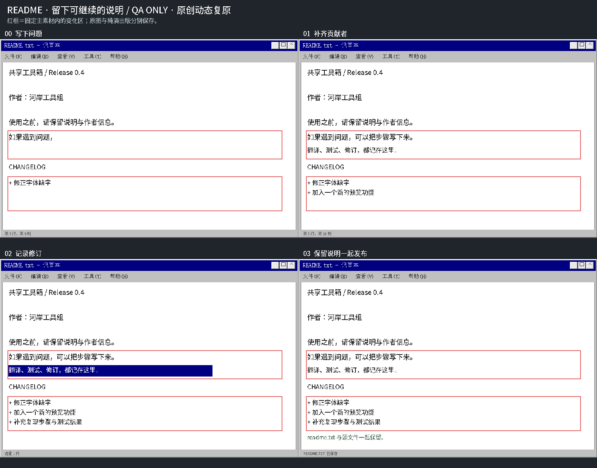
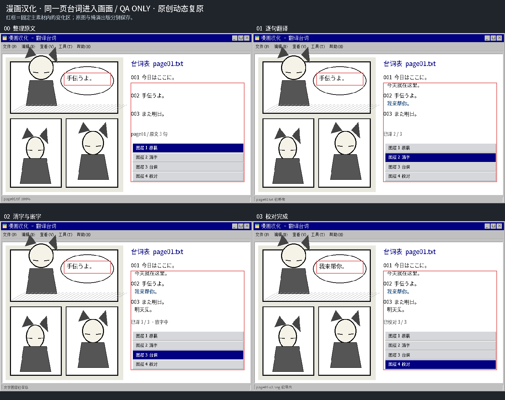
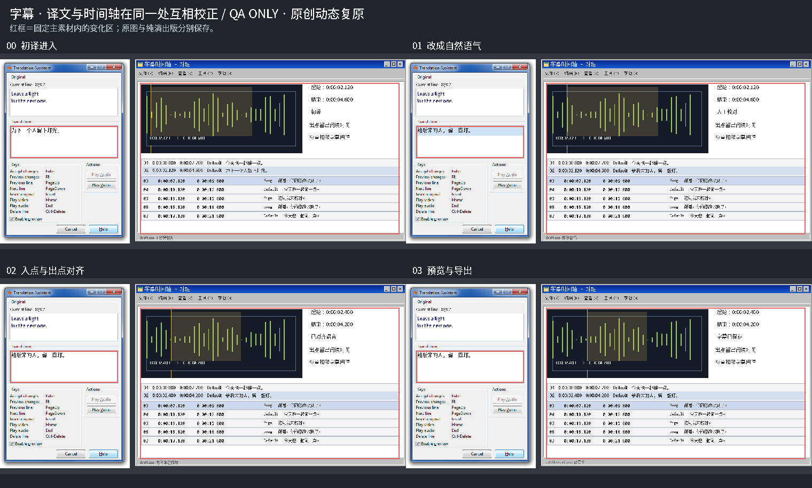
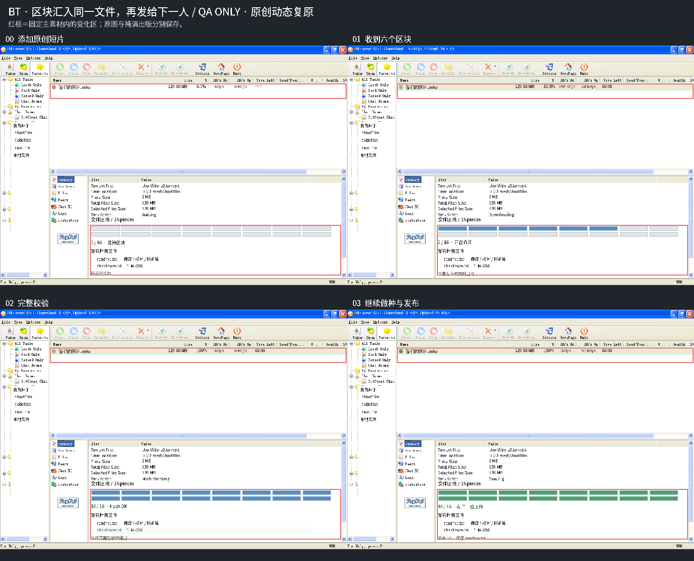
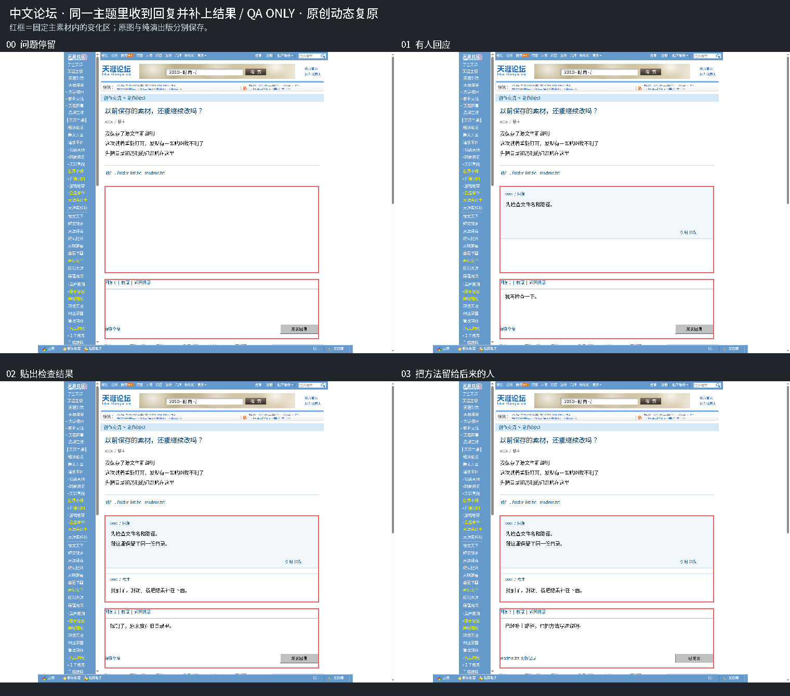
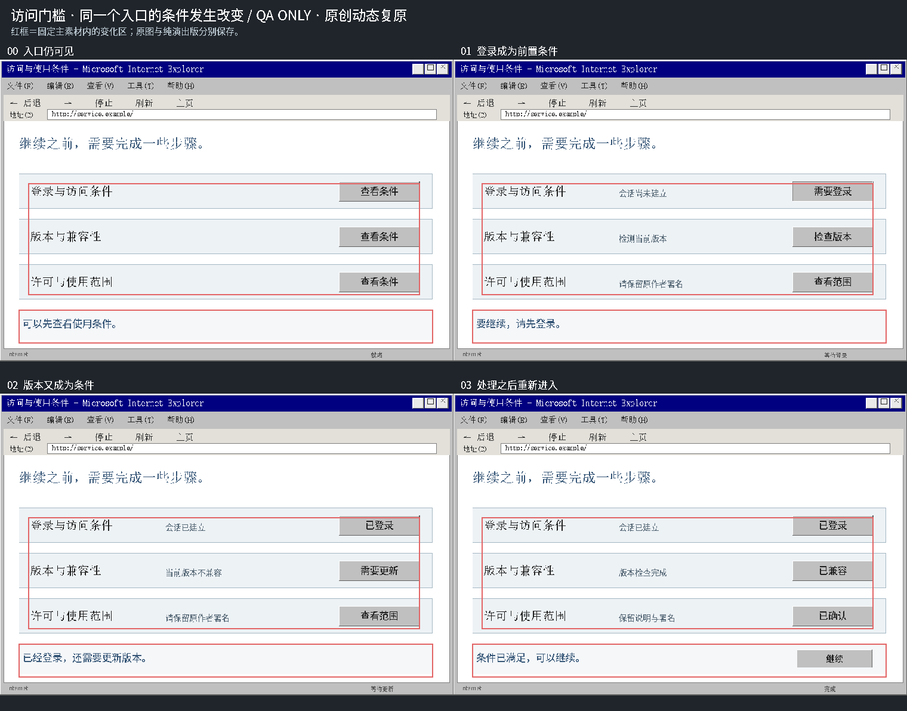

README · 留下可继续的说明
README source is an existing original period-style document. Explorer screenshot is a separate read-only reference; this is not a historical README.
readme / 960×640

纯演出版：各目录 state-00…03.png。此页与 qa-preview.png 含来源/复原说明，仅用于审核。
README source is an existing original period-style document. Explorer screenshot is a separate read-only reference; this is not a historical README.
readme / 960×640

Existing original comic artwork and period-style workflow window. New dialogue and proofreading states are authored, not a real manga/team screenshot.
manga / 800×540

Real 383×546 Aegisub 3.2 Translation Assistant stays unscaled at (0,17). The adjacent 800×540 timeline is an existing original workflow plate, not a second real capture.
subtitles / 1200×580

BitComet screenshot title visibly says 0.53; gallery metadata mismatch is retained. New filename/piece counts/progress are authored visual states, not a real transfer.
torrent / 1024×708

Real Tianya 2009 homepage is an unchanged reference. The central thread is a clearly documented original anonymous forum interaction, not an archived Tianya post or historical claim.
forum / 1440×1100

Existing original generic Internet Explorer-style access page, service.example. It does not depict a named service, real incident or actual restriction notice.
access / 960×640

所有新增状态均为原创动态复原；历史来源与完整状态字段见 data/fullfilm-v2-native-ui.json。没有Unity/Blender伪造实截。